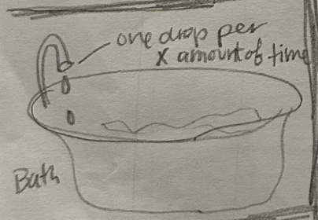
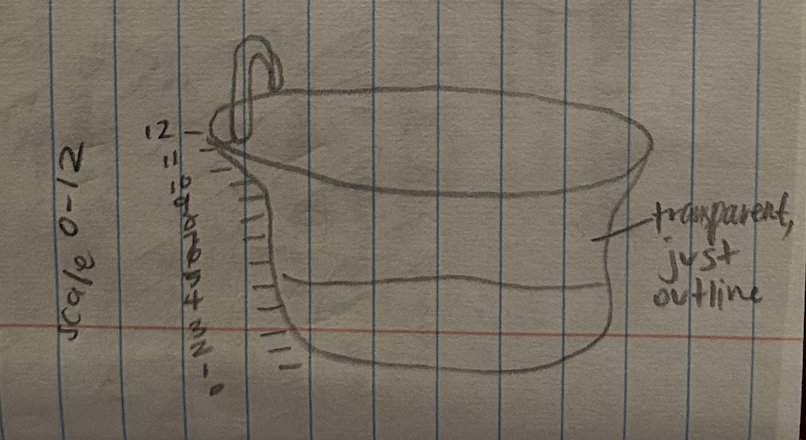
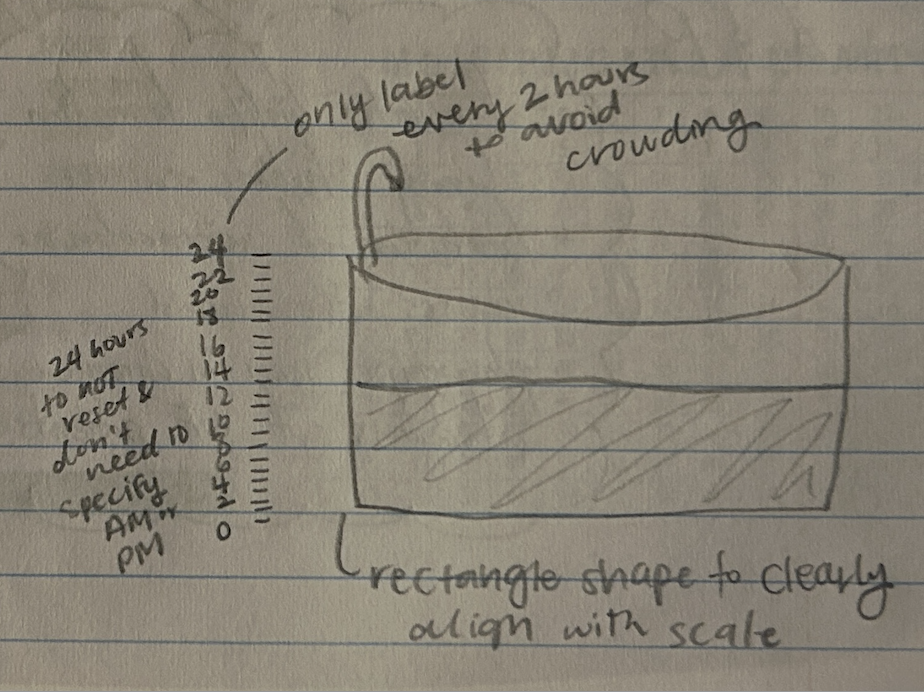
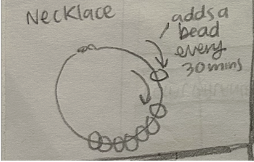
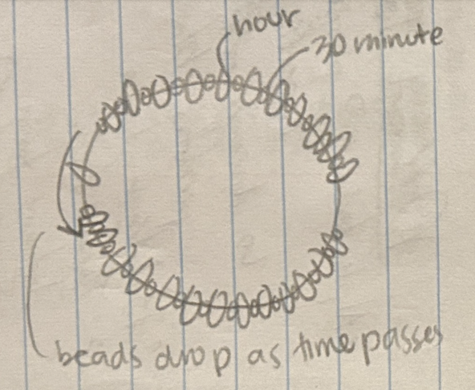
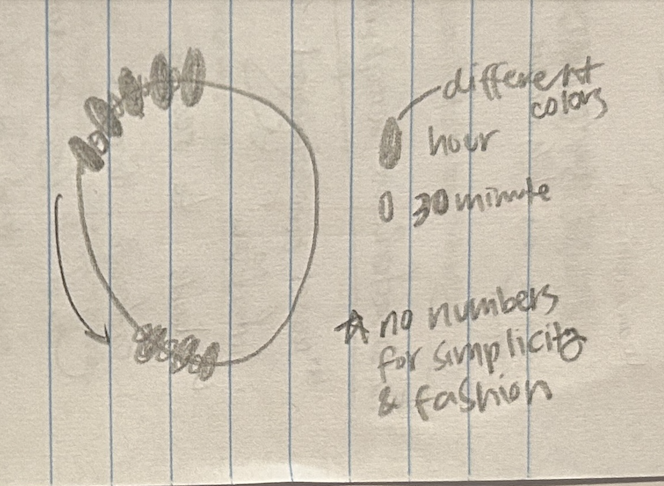

Bathtub Clock Narrative
This sketch visualizes the passage of time throughout a 24-hour day by using a bathtub filling with water as the day progresses. This design is intended to be used at home in a bathroom to show time in a relaxing way.
- Context: This is for people who want to see time pass in a relaxing way at home in a bathroom during a morning or evening routine.
- Design decisions:
- 1. Bathtub shape: oval top and rectangular body for clarity along with the scale.
- 2. Water fill: gradually rises from bottom to top to represent hours and minutes with a blue water color that contrasts with the background.
- 3. Tick marks: hour tick marks are longer than half-hour marks for clarity, and hours are labeled every two hours on the 24 scale to avoid clutter and confusion.
- Future work: Add animated drips from the faucet, an interactive timer setting, and a way to track minutes or seconds.
Sketch evolution



Necklace Abacus Clock Narrative
This sketch visualizes the passage of time throughout a 24-hour day by using a necklace that adds beads to the front as the day goes on. This design is intended to be used as a wearable jewelry that is elegant and functional.
- Context: This is for people who want to see time pass throughout the day as they wear the clock wherever they go.
- Design decisions:
- 1. Use of color: hour and half hour marks are clearly shown by contrasting colors so users can tell the difference at a glance.
- 2. Use of size: the beads are sized with smaller as 30 minute markers and larger for hour markers.
- 3. Moving beads: beads are dropped from the back to the front of the necklace in 30 minute increments so a wearer can see easily how much time has passed.
- Future work: Add the ability to customize the necklace's amount of beads so a user can have a timer for their chosen time frame.
Sketch evolution



Adapted from Golan Levin, 2016-2018